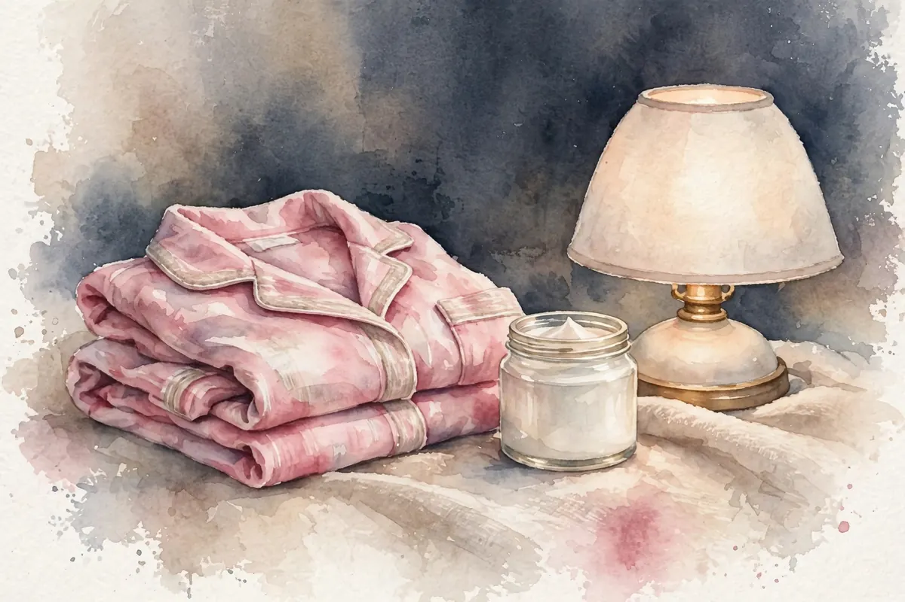

トップ ＞ ボディケア ＞ 寝る前のケアと寝具につきにくい工夫
寝る前のケアと寝具につきにくい工夫

寝る前にボディケアをすると、シーツやパジャマにクリームがつくのが気になる、という声をよく聞きます。施術の現場でも、施術後の衣類への付き方は配慮するポイントです。この記事では、夜のケアのタイミングと、寝具につきにくくする工夫を整理します。付きにくさは、アイテムの質感だけでなく、夜の流れの組み立て方で調整できる要素です。
塗るのは「寝る直前」ではなく「支度の途中」
つきにくくする基本は、塗ってから布団に入るまでの間に、少し時間を置くことです。入浴後に塗って、歯磨きや翌日の準備など、別の支度をはさみ、最後に布団に入る。この順番に組み替えると、表面がなじむ時間が取れます。待ち時間を「何もしない時間」にしないことが、夜の流れを無駄なくするコツです。
塗る順番も工夫できます。脚や腕など面積の広い部位から塗り始め、手先など細かい部位を後にすると、広い面から先になじみ始めます。着替えは、塗ったあとの支度が終わってからにするのが、私の夜の流れです。パジャマに着替えるタイミングを、支度の最後に置く。それだけで、付き方の感じは変わります。
量は「薄く2回」で調整する
寝具への付き方は、量の多さと関係します。一度に厚く塗るより、少量を2回に分けて伸ばす方が、表面に残る量は減ります。夜のケアでは、量を「日中の8割」に抑える、といった自分の基準を決めておくのも方法です。手のひらを単位にして数える方法を使えば、夜の量も日中と同じ物差しで管理できます。
特に付き方が気になる日は、塗る部位を絞ることも選択肢です。すねや腕など、乾燥を感じやすい部位を中心にして、全身は別の日に回す。夜のケアは、毎晩フルコースである必要はありません。部位を日替わりにする「ローテーション」という考え方も、夜のケアには向いています。
パジャマと寝具との付き合い方
パジャマは、洗濯しやすい素材のものを夜のケア用に決めておくと、付き方を気にしすぎずに済みます。かかとにクリームを塗った日は、靴下をはいて寝る方もいます。滑りやすさには注意が要りますが、寝具への付き方を抑える生活上の工夫として、現場でも話題にのぼります。
枕元に置くのは、唇のケアやハンドケアなど、小さいアイテムに絞ります。寝室に置くものが少ないほど、夜の支度は単純になります。夜のケアは、タイミング、量、衣類。この3つの組み立てで、快適さが決まります。シーツの洗濯の頻度など、寝具側の管理と組み合わせて考えることも、長く続けるための視点です。
寝る前のケアには、時間の区切り方も大切です。就寝時刻から逆算して、入浴とケアの開始時刻を決めておくと、夜の流れ全体が安定します。塗る工程を寝る直前に寄せすぎないことは、時間の設計でもあります。
家族と寝室を共有する場合は、香りの配慮も夜の設計に入ります。香りの穏やかなものを夜用に分ける、という方法もあります。自宅用の中でも、昼用と夜用でアイテムを分けることは、場面に合わせた設計のひとつです。
冬場は、寝具の素材との相性も変わります。静電気が気になる季節は、パジャマの素材選びも含めて、夜の快適さを設計します。ケアと衣類と寝具は、夜の場面では一つのセットです。夜のケアが整うと、朝の身支度も軽くなります。前の晩の設計が、翌日の出発点になるからです。まずは一週間、同じ流れで試してみてください。夜の流れが決まると、寝る前の迷いが減り、支度全体が静かに整っていきます。付きにくさへの心配も、段取りの中で小さくなっていきます。夜の設計は、続けるほど自分のものになっていきます。それが夜の型です。
セラフィナ「塗ってすぐ寝ない。支度をはさんで、薄く2回。それが夜の工夫だね」

セラフィナ｜美容の道具箱の案内役
「量と表示が分かれば、美容は失敗しない。」——セラフィナと白猫のモコが、買う前のチェックポイントを案内します。綺麗になりたい気持ちに正直に、でも表示は冷静に読むのが、このサイトの約束です。